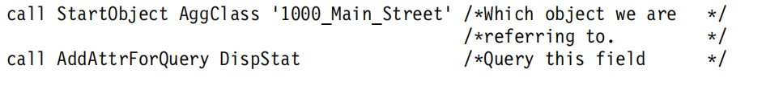
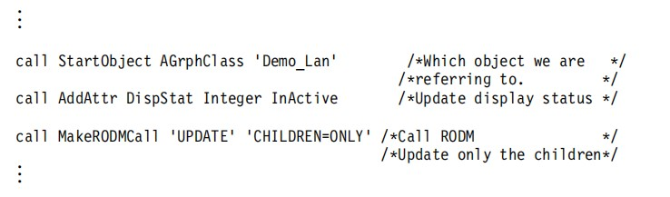
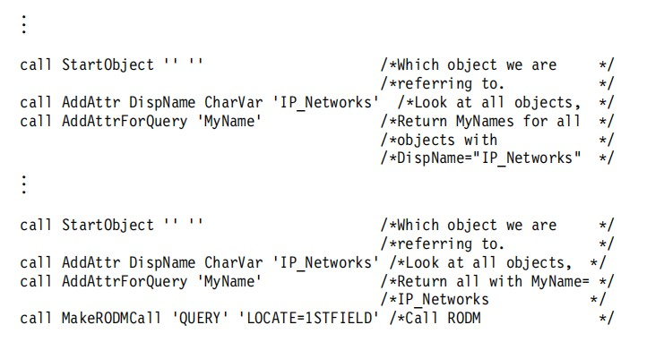

| Parameter | Description |
|---|---|
| WHITESPACE | .This specifies the level of whitespace (blank kines)to be mixed in with the RODM load function compatiable output. |
| .Can be specified as either LOW or HIGH.Specifying WHITESPACE=HIGH gives the most readable output ,butWHITESPACE =LOW reduces the lines of total output by approximately half. | . The actual data content of the output is identical with either LOW or HIGH |
The 5 output data sets are specified in the JCL. The output data sets and content follow:
CLASSES
Contains the class structure creation high-level syntax
CLASSVAL
Contains the class subfield creation and value-setting primitives
OBJECTS
Contains the object-creation primitives
OBJVAL
Contains the object subfield value-setting primitives
LINKS
Contains the link primitives
The RODM unload function reads the DCB specifications of the data sets from the JCL and modifies itself. Use the DCB specifications in the sample as supplied. The RODM unload function always produces output that is a maximum of 80 characters wide, even if a wider DCB is specified.
Start the RODM unload function by running the EKGKUJCL job.
Running the RODM Unload Function
The RODM unload function can be used to migrate from one version of RODM to another. This is accomplished by unloading an existing RODM and loading the newer version of RODM with the output from the RODM unload function. To perform a complete unload of RODM, change the SYSIN parameters in the EKGKUJCL job as shown in Figure 140 and run the job. Note that the OBJECT= parameter has been deleted from the sample JCL.
RODM=(rodmname)
CLASS=UniversalClass
DEPTH=All
REPORTONLY=No
WRITEMODE=Overwrite
WHITESPACE=Low
Figure 140. EKGKUJCL SYSIN Parameters to Unload RODM Completely
To unload all the objects that represent network monitorable (real and aggregate) resources in the GMFHS data model, the SYSIN parameters to EKGUJCL are changed as shown in Figure 141 on page 552.
RODM=(rodmname)
CLASS=GMFHS_Monitorable_Objects_Class
DEPTH=All
REPORTONLY=No
WRITEMODE=Overwrite
WHITESPACE=Low
Figure 141. EKGKUJCL SYSIN Parameters to Unload Network Monitorable Objects
To get the RODM definitions for a particular object, when the class of the object is not known, change the SYSIN parameters EKGKUJCL job as shown in Figure 142.
RODM=(rodmname)
CLASS=UniversalClass
OBJECT=DesiredObject
DEPTH=All
REPORTONLY=No
WRITEMODE=Overwrite
WHITESPACE=High
Figure 142. EKGKUJCL SYSIN Parameters to Unload an Object When Class is Unknown
If the class that the object is defined under is known, it saves processing time to specify that class directly. Set the CLASS=, OBJECT= and the DEPTH= parameters as shown in Figure 143.
RODM=(rodmname)
CLASS=SpecificClass
OBJECT=DesiredObject
DEPTH=One
REPORTONLY=No
WRITEMODE=Overwrite
WHITESPACE=High
Figure 143. EKGKUJCL SYSIN Parameters to Unload an Object When Class is Known
To get the RODM definitions for all objects in two particular classes only, change the parameters in the EKGKUJCL job as shown in Figure 144.
RODM=(rodmname)
CLASS=SpecificClass1
CLASS=SpecificClass2
DEPTH=One
REPORTONLY=No
WRITEMODE=Overwrite
WHITESPACE=Low
Figure 144. EKGKUJCL SYSIN Parameters to Determine Object Definitions for Two Classes
FLCARODM
FLCARODM (RODM Access Facility) provides a fast and efficient REXX interface to RODM. (FLCARODM was formerly known as the RODM Access Facility or MultiSystem Manager Access.) With FLCARODM, you can create, update, and delete objects using a NetView CLIST written in REXX. FLCARODM provides a simple interface to RODM and you can use it to exploit the processing advantages of issuing batched requests to RODM. This section describes how to use FLCARODM and includes the following topics:
.Using stem building routines
.The FLCARODM command
.FLCARODM functions
.v The result stem
.The object data stream
Overview
FLCARODM provides a REXX interface to the RODM user application programming interface (UAPI). FLCARODM performs multiple operations on one or more objects in a single invocation and removes many of the complexities of using the RODM UAPI. Use this high speed interface to create, update, query, locate, and delete objects in RODM.
The two ways to use FLCARODM are as follows:
.Specify the data and operations using a low-level data stream. See “Object Data Stream Detail” on page 594 for more information.
.Use the stem building subroutines that are provided by NetView to create a REXX stem variable.
Stem Building Subroutines
This section describes the subroutines that are provided to create the REXX object data stream in a REXX stem variable. These subroutines are called stem building subroutines, and they create the contents of a REXX stem variable that gets passed to FLCARODM using the FLCARODM command.
The stem building subroutines are provided in the FLCSSTEM sample. You can use FLCSSTEM by appending it to your procedure using an INCLUDE statement such as the following statement:
%INCLUDE FLCSSTEM
To use an INCLUDE statement, you must also enable the NetView program support of %INCLUDE by coding /*%NETVINCL at the beginning of the first line of your procedure.
Note: Instead of using an INCLUDE statement, you can copy the code from the FLCSSTEM sample into your procedure.
The subroutines that are provided manipulate REXX stem variables that are used with FLCARODM. These subroutines manipulate the following stem variables:
.RodmStem which is used as input to FLCARODM
.RodmResult which is used to hold the output from FLCARODM
.QueryStem which is used to hold queried information extracted from RodmResult
A variable called Retcode is used by all of the subroutines to indicate if any errors have occurred. A non-zero value in the Retcode variable indicates that processing stops.
FLCARODM supports class, object, and field IDs in the input stem variable. To specify a numeric ID instead of a name, prefix the ID with a #. For example, if you knew an object's class ID was 12, you can specify an element of the input stem variable as input.x = ’#12’.
AddAttr Subroutine
Use the AddAttr subroutine to specify a new or existing field on the current object.
Specification
call AddAttr fieldname fieldtype fieldvalue
Operand Descriptions
Where:
fieldname
The name of the field
fieldtype
The data type of the field
fieldvalue
The new or changed value of the field
Usage Notes
.Use AddAttr with the BUILD and UPDATE functions.
.AddAttr must be specified before Addlink
Example
The following code from sample FLCSX7 calls the AddAttr subroutine that creates a field named DispStat that is of type Integer and that has a value of InActive:
call AddAttr DispStat Integer InActive
Note: DispStat is a shortened version of DisplayStatus that is defined in the FLCSSTEM sample by using the following assignment statement:
DispStat = ’DisplayStatus’
AddAttrForQuery Subroutine
Use the AddAttrForQuery subroutine to specify either the field to be queried using the QUERY function, or the name of the first field when a function is specified with the XREF=1STFIELD parameter.
Specification
call AddAttrForQuery ’fieldname’
Operand Descriptions
Where:
fieldname
The name of the field to query or the name of the field referred to by the XREF=1STFIELD parameter
Usage Notes
.Use the AddAttrForQuery subroutine with the QUERY function, or with the following functions when they are specified with the XREF=1STFIELD parameter.
-DELINKA
– DELOBJ
– QUERY
– UPDATE
Example
The following code from sample FLCSXS02 calls the AddAttrForQuery subroutine to specify four fields on the RealAgent object of the RAgeClass that are queried:
call StartObject RAgeClass RealAgent
call AddAttrForQuery MyName
call AddAttrForQuery DispName
call AddAttrForQuery RealAgeNam
call AddAttrForQuery RealSerNam
call MakeRODMCall ’QUERY'
The following code from sample FLCSX19 calls the AddAttrForQuery subroutine to specify two fields on the Demo_Lan object of the AGrphClass class that are used to identify object links that are to be removed:
call StartObject AGrphClass ’Demo_Lan’
call AddAttrForQuery Member
call call AddAttrForQuery PhyConn
call call MakeRODMCall ’DELINKA’ ’XREF=1STFIELD’
AddAttrForQuery Member specifies that all objects specified by the Member field are identified and AddAttrForQueryPhyConn specifies that all links specified by the PhyicalConPP field are removed.
AddLink Subroutine
Use the AddLink subroutine to specify a field to link to. The field must be one of the following data types:
.ObjectLink
.ObjectLinkList
.ObjectIdList
Specification
call AddLink ’linkfldname’ ’classofobj’ ’nameofobj’ ’fldofobj’
Operand Descriptions
Where:
linkfldname
The name of the field to be linked to
classofobj
The class of the object to be linked to
nameofobj
The name of the object to be linked to
fldofobj
The field on the object to be linked to
Usage Notes
.Calls to the AddAttr subroutine must be specified before call to AddLink are specified
Example
The following code from sample FLCSX11 uses the AddLink subroutine to specify the PhysicalConnPP field of the Bridge_1 object and the PhysicalConnPP fields of the Segment_1 and Segment_2 objects. The DELINKAB function removes the links defined by the PhysicalConnPP fields.
call StartObject ABrgClass ’Bridge_1’
call AddLink PhyConn ASegClass ’Segment_1’ PhyConn
call AddLink PhyConn ASegClass ’Segment_2’ PhyConn
call MakeRODMCall ’DELINKAB’
AddLinkForDelete Subroutine
Use the AddLinkForDelete subroutine to specify a link on the specified object.
Specification
call AddLinkForDelete fldname
Operand Descriptions
Where:
fldname
The name of the field on the specified object that defines the link that is to be deleted.
Example
The following code from sample FLCSX10 calls the AddLinkForDelete subroutine that specifies the PhysicalConnPP on the object of the ABrgClass class named Bridge_1. The DELINKA function removes the links defined by the PhysicalConnPP field.
call StartObject ABrgClass ’Bridge_1’
call AddLinkForDelete PhyConn
call AddLinkForDelete PhyConn
CheckChildrenUpdate Subroutine
Use the CheckChildrenUpdate subroutine to remove acceptable return codes from the RodmResult stem variable when either the UPDATE or DELINKA function is specified with the CHILDREN=ONLY parameter.
Acceptable return codes indicate one of the following:
.An aggregate object does not exist.
.Child objects do not exist.
.Specified fields do not exist on the child object.
For unacceptable return codes:
.Message FLC070E is issued.
.The return codes are written to the log.
.The Retcode stem variable is set to 16.
Specification
call CheckChildrenUpdate
.Use this subroutine only when you specify the UPDATE and DELINKA functions with the CHILDREN=ONLY parameter. Combinations of other functions and parameters are not supported.
CheckDelinkResponse Subroutine
Use the CheckDeLinkResponse subroutine to remove acceptable return codes from the RodmResult stem variable when either the DELOBJ or DELINKA function is specified.
Acceptable return codes indicate one of the following:
.An aggregate object does not exist.
.Child objects do not exist.
.Specified fields do not exist on the child object.
For unacceptable return codes:
.Message FLC070E is issued.
.The return codes are written to the log.
.The Retcode stem variable is set to 16.
Specification
call CheckDelinkResponse
Usage Notes
.Use this subroutine only when you specify the DELOBJ and DELINKA functions. Other functions are not supported.
InitRODMConstants Subroutine
Use the InitRODMConstants subroutine to initialize the constants specified in the FLCSSTEM sample.
Specification
call InitRODMConstants
Usage Notes
.You must read the code to see what variables are available for your use.
InitRODMStem Subroutine
Use the InitRODMStem subroutine to initialize the RODMStem variable.
Specification
call InitRODMStem
Usage Notes
.Specify InitRODMStem the first time you use FLCSSTEM. Subsequent calls to InitRODMStem are not required, because the MakeRODMCall subroutine calls InitRODMStem.
MakeRODMCall Subroutine
Use the MakeRODMCall subroutine to issue the FLCARODM command with the RODMStem variable as input.
Specification
call MakeRODMCall function functparm1 functparm2
Operand Descriptions
Where:
function
Specifies the function to be performed. See “FLCARODM Functions” on page 564 for more information.
functparm1
Specifies the first function parameter.
functparm2
Specifies the second function parameter.
Example
The following code from sample FLCSXF1 calls the QUERY subroutine with the XREF and FILTER parameters.
call MakeRODMCall ’QUERY’ ’XREF=2.9.3.2.7.42’ ’FILTER=1STFIELD’
SetIndexList Subroutine
Use the SetIndexList subroutine to update the value of fields that are of type IndexList.
Specification
call SetIndexList fieldvalue fieldname
Operand Descriptions
Where:
fieldvalue
Specifies the value of the field
fieldname
Specifies the name of the field.
Usage Notes
.Use SetIndexList to update the value of fields that are only of type IndexList.
.Use caution when using the SetIndexList function, because the value of the field is overwritten and the previous value cannot be recovered.
Example
The following code from sample FLCSX22 calls the SetIndexList subroutine to modify the ExceptionViewList field on the Demo_Lan object:
call StartObject AGrphClass ’Demo_Lan’
my_String = ’testing’
call SetIndexList my_String ExceptionViewList
call MakeRODMCall ’UPDATE’
StartObject Subroutine
Use the StartObject subroutine to specify a new or existing object. Subsequent subroutine specifications (for example, AddAttr) apply to the current object until either another object is specified by StartObject, or the MakeRODMCall subroutine is specified.
Specification
call StartObject classname objectname
Operand Descriptions
Where:
classname
The name of the class for the object that is specified.
objectname
The name of the object that is specified.
Usage Notes
.Classes cannot be created using StartObject.
.Use the StartObject subroutine with all of the FLCARODM functions.
.Object names must be specified between single quotation marks (' ').
Example
The following code from sample FLCSX09 calls the StartObject subroutine which creates an object of the AGrphClass named Demo_Lan:
call StartObject AGrphClass ’Demo_Lan’
Note that if no object named Demo_Lan exists when sample FLCSX09 is run, a new object is created. If an object named Demo_Lan already exists, the existing object is used.
About the Examples
The examples used in this appendix are provided by the NetView Product as sample code. Although the examples use the MultiSystem Manager and GMFHS data models, FLCARODM supports any data model that is loaded in RODM.
The examples create stem variables that are used as input to the FLCARODM command. The statement call MakeRODMCall function calls the FLCARODM command using the function specified. For example, the following statement issues the FLCARODM command with the BUILD function.
call MakeRODMCall ’BUILD’
Using the Samples
To use the sample code provided by the NetView product, perform the following tasks:
.In your REXX procedure, set a variable FLC_RODMNAME to the name of the RODM you are using.
.In your REXX procedure, set a variable FLC_RODMAPPL to your RODM application ID.
.Include the subroutines in FLCSSTEM by using an %INCLUDE statement in your REXX procedure immediately after your own subroutines. To use an INCLUDE statement, you must also enable the NetView program support of %INCLUDE by coding /*%NETVINCL at the beginning of the first line of your procedure. FLCSSTEM provides the subroutines and constant definitions that are used by the samples.
Note: Instead of using an INCLUDE statement, you can copy the code from the FLCSSTEM sample into your procedure.
FLCARODM Command
Use the FLCARODM command to input data into and read data from RODM.
The FLCARODM command must be issued using the NETVIEW stage of the NetView PIPE command. Therefore, it receives information about the functions to be performed from two sources: the PIPE data stream and the parameters the command is issued with. Figure 145 shows an example of issuing the FLCARODM command:

Figure 145. Issuing the FLCARODM Command
Where:
object_data
The REXX stem variable that is used as input.
parameters
The parameters of the FLCARODM command
result
The REXX stem variable that receives the return codes or data from FLCARODM.
Use the format shown in Figure 145 when you are specifying data using the object data stream described in “Object Data Stream Detail” on page 594.
The NetView product also provides another way to use the FLCARODM command. Instead of specifying the command directly, use the MakeRODMCall subroutine. See “Stem Building Subroutines” on page 553 for a description of the MakeRODMCall subroutine and the other subroutines you can use to create a REXX object data stream.
The following section describes the format of the FLCARODM command. The description includes the format and description of the operands and usage notes.
FLCARODM Syntax

FLCARodmFunctions:

Xref:

PurgeOptions:

Operand Descriptions
CHILDREN
Specifies whether the operation applies to the specified children of the object. The CHILDREN parameter cannot be specified if the XREF parameter is specified.
Use the CHILDREN parameter with the following functions:
.UPDATE
.DELINKA
.DELOBJ
NO
Indicates that the function is performed on the specified object, but not on its children.
ONLY
Indicates that the function is performed on the specified children of the object, but not on the object itself.
YES
Indicates that the function is performed on the object specified and its children.
Notes:
1. YES is not valid with the UPDATE function.
2. For the UPDATE function, only the first level of children is updated.
EXCLUDE
Used with the PURGE function and can be specified only when TRACE=YES is specified. The EXCLUDE option indicates which purge messages (FLC040I, FLC041I, and FLC042I) must not be issued during purge processing. If you attempt to purge an aggregate object that has many objects beneath it, you might want to receive the FLC040I and FLC042I successful purge messages and suppress the FLC041I unsuccessful purge messages (for example, EXCLUDE=FLC041I). Otherwise, you might receive many unwanted FLC041I messages. One to three of these purge messages can be specified. No other messages are permitted.
FIELDID
Indicates whether the QUERY function returns field identifiers with the field names.
NO
Indicates that the field identifiers are not returned.
YES
Indicates that the field identifiers are returned.
FILTER
Used with the XREF parameter to filter the list of objects that are operated on.
Use the FILTER parameter with the following functions:
.DELOBJ
.DELINKA
.PURGE
.QUERY
.QUERYSF
.UPDATE
The XREF parameter must be specified before the FILTER parameter is specified except for the PURGE function. For the PURGE function, FILTER can be specified without the XREF parameter.
The first field on each object specification must be the field name, type, and value of the filter criteria. The FILTER value is applied only after all other functions and parameters have been processed. FILTER returns values that are either exact matches or partial matches. For example, if the field value Segment is specified and an object exists that has the value Seg, the filter matches and the object is returned.
FILTER=1STFIELD must be specified unless XREF=1STFILELD is specified. If XREF=1STFILELD is specified, FILTER=2NDFIELD must be specified. The field description must specify the following information in the order shown:
1. Field name
2. Field data type
3. Field value
FUNCTION
Specifies the function that is performed. For a description of each function, see “FLCARODM Functions” on page 564.
LOCATE
Specifies that the first field definition is used as the criteria to create a list of objects.
LOCATE=1STFIELD must be specified, and the first field description must specify the following information in the order listed:
1. Field name
2. Field data type
2. Field data type
Use the LOCATE parameter with the following functions:
.DELINKA
.DELOBJ
.QUERY
.QUERYSF
.UPDATE
RODMINT
The amount of time in seconds that FLCARODM waits between retrying requests when RODM is checkpointing. The default value is five seconds.
RODMRTRY
The number of times FLCARODM retries a request when RODM is checkpointing. The default value is three. If RODM is still checkpointing after FLCARODM has retried the request for the number of times specified, an error is returned to the application.
RODMNAME
The name of the RODM to be used.
RODMUSER
The application name that is used to connect to RODM. The same RODMUSER value can be used by multiple NetView operators executing REXX programs that call FLCARODM. However, Access cannot use the same RODMUSER value as other applications (for example, RODMVIEW) that connect to RODM.
Create a RODMUSER value by concatenating the NetView domain name with a three-character identifier. For example, MultiSystem Manager concatenates the NetView domain name CNMO1 with MultiSystem Manager to create the RODMUSER value. For example, if the NetView domain name is CNM01, MultiSystem Manager creates a RODMUSER value of CNM01MSM.
SF
Indicates the subfield to be queried. Specify one of the following values:
.CHANGE
.NOTIFY
.PREV_VAL
.QUERY
.TIMESTAMP
STATUS
The DisplayStatus field value used to determine whether objects are purged by the PURGE function.
ALL
Indicates that an object are purged regardless of its DisplayStatus value. The TIMESTMP parameter cannot be specified when STATUS has a value of ALL.
The DisplayStatus field value of the objects that are to be deleted. The default value is 132 (unknown).
TIMESTAMP
The age criteria, specified in seconds, of objects to be purged. The default is 84400, which is the number of seconds in 24 hours.
TRACE
Specifies whether the PURGE function is run in trace mode. In trace mode, a message is issued for every object that is purged.
NO
Indicates that the PURGE function is not run in trace mode.
YES
Indicates that the PURGE function is run in trace mode.
XREF
Specifies that a function is performed on a list of dynamically acquired objects. The list of objects is defined by the field that is specified. The field must be one of the following data types:
.ObjectIdList
.ObjectIdList
.ObjectLink
.ObjectLinkList
Use the XREF parameter with the following functions:
.DELINKA
.DELOBJ
.QUERY
.UPDATE
The XREF parameter cannot be specified if the CHILDREN parameter is used.
Because the XREF parameter can contain mixed-case characters, ADDRESS NETVASIS must be specified.
1STFIELD
Specifies that the first field that is defined on an object is used.
objectname
Indicates the name of the field that is used. For objects that have dotted decimal notation names, you must use the dotted decimal name. For example, to specify the member field you must specify 2.9.3.2.7.42.
FLCARodmFunctions:
This section describes the functions provided by the FUNCTION parameter of the FLCARODM command.
The following information is provided for each function:
.A description of each function and when to use it.
.An example based on a set of samples that are provide by MultiSystem Manager.
.The results of the function are described, if applicable.
For information about using the samples described in this section, see “About the Examples” on page 559.
BUILD Function
Use the BUILD function to perform the following functions:
.Create new objects
.Modify existing objects
.Create fields and assign field values
.Define relationships between objects
The following data types are supported by the BUILD and UPDATE functions:
Date Type
Data Type Identifier
CHARVAR
4
INTEGER
10
SELFDEFINING
19
SMALLINT
21
FIELDID
26
ANONYMOUSVAR
30
The following code from sample FLCSX1 demonstrates how to use the BUILD function to create objects in RODM:
.
.
.


Results of Executing the BUILD Function:
The following objects were created in RODM by the BUILD function:
.A view object that represents a network view named Hometown
.An aggregate object that represents Main_Street
.A real object that represents a house on Main_Street named 1000_Main_Street
UPDATE Function
Use the UPDATE function to change the value of fields on existing objects. The UPDATE function does not create objects. If you attempt to update a field on an object that does not exist, an error is returned.
The following code from sample FLCSX2 demonstrates how to use the UPDATE function to change objects in RODM.
.
.
.

.
.
.
Results of Executing the UPDATE Function:
The value of the DisplayStatus field on real object that represents named 1000_Main_Street is changed to 132 (Unsatisfactory
QUERY Function
Use the QUERY function to determine the value of one or more fields on one or more objects. If either the field or the object does not exist, an error is returned. The field type and the field value are returned for every field on each object.
Although the field type is not specified when querying a field, FLCARODM only returns values for the following data types:
CLASSID
1
CHARVAR
4
INTEGER
10
OBJECTID
14
OBJECTIDLIST
15
OBJECTLINK
16
OBJECTLINKLIST
17
OBJECTNAMET
18
SELFDEFINING
19
SMALLINT
21
SMALLINT
23
FIELDID
26
ANONYMOUSVAR
30
Examples of Using the QUERY Function:
This section contains several examples of using the query function.
The following code from sample FLCSX3 queries the DisplayResourceOtherData field on the Main_Street object:
.
.
.

.
.
.
The result stem from FLCSX3 contains the following information in the order specified:
.The number of elements in the stem
.The FLCARODM return code followed by the RODM return and reason code
.The value of the field
The following is a partial example of the result stem that is returned when sample FLCSX3 is run.
3
FLCARODM:0,0,0
4
Constructed In 1889
.
.
.
Table 226 describes the result stem that was returned for sample FLCSX3:
Table 225. SYSIN DD Parameter Descriptions (continued)
| Element Number | Element Value | Explanation |
|---|---|---|
| 0 | 3 | Indicates that the result stem contains 3 elements |
Table 226. FLCSX3 sample (result stem) (continued)
| Element Number | Element Value | Explanation |
|---|---|---|
| 1 | FLCARODM:0,0,0 | The FLCARODM return code and the RODM return and reason code |
| 2 | 4 | Indicates the data type of the field (charvar) |
| 3 | Constructed In 1889 | The value of the field |
Sometimes is it useful to know the value of the field identifier for a specified field. For example, if you are saving fields in a table, you can save space by saving the four-byte field ID instead of the larger field name.
Specifying the FIELDID parameter with a value of YES causes FLCARODM to return the field identifier value for fields returned by query functions.
Notes:
1. The field identifiers can change when RODM is cold-started, so any previouslystored information regarding field identifiers are not used
2. The FIELDID parameter can not be used with the LOCATE, XREF, or CHILDREN parameter
The following code from sample FLCSX3 has been modified by specifying FIELDID=YES to return the field ID of the DisplayResourceOtherData field:
.
.
.

.
.
.
The following partial example shows the result stem that is returned when the modified sample FLCSX3 is run.
4
FLCARODM:0,0,0
4
60
Constructed In 1889
.
.
.
Table 227 describes the result stem that was returned for the modified sample FLCSX3:
Table 227. Modified FLCSX3 sample (result stem)
| Element Number | Element Value | Explanation |
|---|---|---|
| 0 | 3 | Indicates that the result stem contains 3 elements |
| 1 | FLCARODM:0,0,0 | The FLCARODM return code and the RODM return and reason code |
| 2 | 4 | Indicates the data type of the field (charvar) |
| 3 | 60 | Indicates the field ID of the field |
Table 227. Modified FLCSX3 sample (result stem) (continued)
| Element Number | Element Value | Explanation |
|---|---|---|
| 4 | Constructed In 1889 | The value of the field |
Run samples FLCSX1, FLCSX2, and FLCSX3 before you run sample FLCSX4.
Sample FLCSX4 provides an example of using two queries to accomplish a task, and demonstrates how to determine the field values on a class, which is useful for querying default field values or for acquiring all of the objects of a certain class. For this example, assume that RODM was empty before sample FLCSX1 was run. The first part of sample FLCXS4 queries all of GMFHS_Aggegrate_Objects_Class objects in RODM:
.
.
.

.
.
.
The result stem from the first part of sample FLCSX4 contains the following information in the order specified:
.The number of elements in the stem
.The FLCARODM return code followed by the RODM return and reason code
.The data type of the field
.The number of object IDs in the list
.The object ID of the object
The following is an example of the result stem that is returned by the first part of sample FLCSX4
4
FLCARODM:0,0,0
15
1
00010012E05C2A1E
Table 228 describes the result stem that was returned for the first part of sample FLCSX4:
Table 228. FLCSX4 sample (result stem)
| Element Number | Element Value | Explanation |
|---|---|---|
| 0 | 4 | Indicates that the result stem contains 4 elements |
| 1 | FLCARODM:0,0,0 | The FLCARODM return code and the RODM return and reason code |
| 2 | 15 | Indicates the data type of the field (objectidlist) |
| 3 | 1 | The number of object IDs in the list |
| 4 | 00010012E05C2A1E | The hexadecimal object ID of the object |
The second part of sample FLCSX4 queries the name and status of the object ID that was returned from the first query:
.
.
.

.
.
.
The following is an example of the result stem that is returned by the second part of sample FLCSX4.
6
FLCARODM:0,0,0
18
Main_Street
FLCARODM:0,0,0
10
132
Table 229 describes the result stem that was returned for the second part of sample FLCSX4:
Table 229. FLCSX4 sample, second part (result stem)
| Element Number | Element Value | Explanation |
|---|---|---|
| 0 | 6 | Indicates that the result stem contains 6 elements |
| 1 | FLCARODM:0,0,0 | The FLCARODM return code and the RODM return and reason code for the first field that was queried |
| 2 | 18 | Indicates the data type of the field |
| 3 | Main_Street | The number of object IDs in the list |
| 4 | FLCARODM:0,0,0 | The FLCARODM return code and the RODM return and reason code for the second field that was queried |
| 5 | 10 | The data type of the field (integer) |
| 6 | 132 | The value of the field |
Note: The query functions in FLCSX4 were performed by two calls to FLCARODM using the MakeRODMCall subroutine. Both functions can be performed using one call to FLCARODM by using the XREF parameter. See “FLCARODM Command” on page 560 for more information.
DELOBJ Function
Use the DELOBJ to delete one or more objects. When an object is deleted, its links to all other objects are deleted. Note that fields and links cannot be specified with the DELOBJ function.
Use care when using the DELOBJ function, because objects that other applications or users require might be deleted. Consider using the PURGE function instead. It provides a way to remove objects while protecting objects that are associated with other applications from being deleted.
The following code from sample FLCSX5 uses the DELOBJ to delete the 1000 Main Street object.
.
.
.

.
.
.
Results of Executing the DELOBJ Function:
After running this program, the 1000_Main_Street object, its links to Main_Street and, the object, are removed.
DELINKA Function
Use the DELINKA function to delete all links to specified fields on an object. You do not have to specify the links, because the DELINKA function determines which links exist and removes all of them.
For an example of using the DELINKA function, see “Delinking Objects” on page 582.
DELINKAB Function
Use the DELINKAB function to delete the specified links between objects.
For most objects linked using fields of type ObjectLink, it is not necessary to remove a link between objects before defining a new link. Instead, use the UPDATE function, which first removes the old link and then defines the new link. However, for fields that require a method to perform the link removal, (for example, DisplayResourceType), you must use the DELINKAB function.
For links that are defined by fields of type ObjectLinkList (for example, Resources), you must use the DELINKAB function, because the UPDATE function only adds the new link, but it does not delete previously defined links.
For an example of using the DELINKAB function, see “Delinking Objects” on page 582.
PURGE Function
Use the PURGE function to remove objects from RODM. Consider using the RemvObjs command to remove objects from RODM instead of the PURGE function. See the IBM Tivoli NetView for z/OS User's Guide: NetView Management Console for more information about the RemvObjs command.
PURGE Function
Use the LOCATE function to search all fields of type CharVar or IndexList which have been created as public_indexed for a specified string. An example of a publicly indexed field is DisplayResourceName.
The LOCATE function returns the object ID of objects that contain a value that matches the specified string. Note that the search is not case sensitive.
The following code from sample FLCSXL01 finds all of the objects in RODM whose DisplayResourceName field has a value of CPU_UTILIZATION.
.
.
.

.
.
.
Note that you cannot specify a class or object for the LOCATE function. Therefore, StartObject ’’ ’’ is specified, which means search all objects on all classes.
The result stem from FLCSXL01 contains a list of the object IDs of the objects whose DisplayResourceName matches the comparison string NOT_LOGGED_IN. For example, if one object matched this criteria, the following result stem is returned:
4
FLCARODM:0,0,0
15
1
000100012E05C2A1E
Table 230 describes the result stem that was returned for sample FLCSXL01 if one object met the search criteria.
Table 230. FLCSXL01 sample, one object met the search criteria (result stem)
| Element Number | Element Value | Explanation |
|---|---|---|
| 0 | 4 | Indicates that the result stem contains 4 elements |
| 1 | FLCARODM:0,0,0 | The FLCARODM return code and the RODM return and reason code |
| 2 | 15 | Indicates the data type of the field (objectidlist) |
| 3 | 1 | The number of matches found |
| 4 | 00010012E05C2A1E | The object ID of the object that matched the search criteria |
If there were no objects in RODM with a field that matched the comparison criteria, FLCARODM returns an Object ID List with zero elements as follows.
3
FLCARODM:0,0,0
15
0
Table 231 describes the result stem that is returned for sample FLCSXL01 if no objects met the search criteria.
Table 231. FLCSXL01 sample, no objects met the search criteria (result stem)
| Element Number | Element Value | Explanation |
|---|---|---|
| 0 | 3 | Indicates that the result stem contains 3 elements |
| 1 | FLCARODM:0,0,0 | The FLCARODM return code and the RODM return and reason code |
| 2 | 15 | Indicates the data type of the return data (objectidlist) |
| 3 | 0 | Indicates that no matches were found |
RodmResult.0
3
RodmResult.1
FLCARODM:0,0,0
RodmResult.2
15
RodmResult.3
0
QUERYALL Function
The QUERYALL function returns the field name, field type, and value for all of the fields defined on the specified object. For example, the following example queries the fields on the Main_Street object.
.
.
.

.
.
.
Results of Executing the QUERYALL Function:
The result stem from FLCSXQ2 contains the following information in the order specified:
.The number of elements in the stem.
.The FLCARODM return code followed by the RODM return and reason code.
.The number of fields defined on the object.
.A sequence of field specifications. For each field, the field specification contains the following information in the order specified:
-Return Code
-Name
-Identifier
-Value
The field specification information is repeated for each field.
The result stem from FLCSXQ2 contains the number of elements in the stem, the return code, the number of fields defined on the object, and a sequence of field specifications. Each field specification contains the following information:
The following is a partial example of the result stem that is returned when sample FLCSXQ2 is run.
212
FLCARODM:0,0,0
51
FLCARODM:0,0,0
IsPartOf
17
0
FLCARODM:0,0,0
IsBusNode
17
0
.
.
.
Table 232 on page 574 describes the result stem that was returned for sample FLCSXQ2.
Table 232. FLCSXQ2 sample (result stem)
| Element Number | Element Value | Explanation |
|---|---|---|
| 0 | 212 | Indicates that the result stem contains 212 elements |
| 1 | FLCARODM:0,0,0 | The FLCARODM return code and the RODM return and reason code |
| 2 | 51 | Indicates the number of fields defined on the object) |
| 3 | FLCARODM:0,0,0 | The FLCARODM return code and the RODM return and reason code |
| 4 | IsPartOf | The name of the first field defined on the object. |
| 5 | 17 | The data type of the IsPartOf field. (objectlinklist) |
| 6 | 0 | The value of the IsPartOf field |
| 7 | FLCARODM:0,0,0 | The FLCARODM return code and the RODM return and reason code |
| 8 | IsBusNode | The name of the second field defined on the object |
| 9 | 17 | The data type of the IsBusNode field. (objectlink) |
| 10 | 0 | The value of the IsBusNode field |
The previous example describes the first two fields in the result stem. Elements 11 through 212 describe the remaining fields using the same format.
QUERYSTR Function
Use QUERYSF to query the value of the specified subfield for a field on the specified objects. The following subfields can be queried:
.QUERY
.CHANGE
.NOTIFY
.TIMESTAMP
.PREV_VAL
The following code from sample FLCSXQ3 returns the value of the previous value subfield of the DisplayStatus field of the 1000 Main Street object:
.
.
.
.
.
.
Results of Executing the QUERYSF Function:
The result stem from FLCSXQ3 contains the following information in the order specified:
.The number of elements in the stem
.The FLCARODM return code followed by the RODM return and reason code
.The data type of the subfield
.The subfield value
Note: Run samples FLCSX1 and FLCSX2 before you run sample FLCSXQ3.
The following is an example of the result stem that is returned when sample FLCSXQ3 is run.
3
FLCARODM:0,0,0
10
129
Table 234 describes the result stem that was returned for sample FLCSXQ3.
Table 234. FLCSXQ3 sample (result stem)
| Element Number | Element Value | Explanation |
|---|---|---|
| 0 | 3 | Indicates that the result stem contains three elements |
| 1 | FLCARODM:0,0,0 | The FLCARODM return code and the RODM return and reason code |
| 2 | 10 | The data type of the subfield (integer) |
| 3 | 129 | The previous value of the field |
Note: FLCSX1 set the value to 129 and then FLCSX2 changed the value to 130, so the previous value was 129.
REBUILD Function
Use the REBUILD function to change objects when the links between objects have changed. For every object specified on the REBUILD function, all specified fields are updated, all specified links are defined, and all previously defined links are removed, with the following exceptions:
.LayoutParmList
.DetailLayoutParmList
.2.9.3.2.7.42 (member)
.1.3.18.0.0.2217 (memberArcs)
.ComposedOfPhysical
.ComposedOfLogical
.AggregationChild
The relationships listed above are not removed to avoid having objects in RODM that have no parent objects defined.
Putting It All Together
This section describes sample files that provide examples of using functions and parameters.
For a description of the subroutines used in the samples, see “Stem Building Subroutines” on page 553.
FLCSOX02
IBM provides sample FLCSOX02 to demonstrate how to create more complex environments with FLCARODM. This sample creates a sysplex model in RODM that contains a sysplex, a system in the sysplex, and multiple stacks contained in the system. This sample demonstrates a complete application to load RODM with objects, and can be used to verify NetView management console installations.
See the header information in FLCSOX02 for more complete details on this sample.
Building Objects
The following sample uses the StartObject and AddLink routines to create and link the following objects:
.An aggregate object named Demo_Lan
.Two objects that represent LAN segments
.An object that represents a bridge that connects the segments
.
.
.

Figure 146. Sample FLCSX6
Updating Objects
The following samples provide examples of changing objects using the UPDATE function.
Using the UPDATE Function With the CHILDREN Parameter:
Figure 147 uses the UPDATE function to change the display status of the Demo_Lan aggregate object. Note that because CHILDREN=ONLY is specified, all of the Demo_Lan children are updated. However, the CHILDREN parameter only updates the first level of children.
Figure 147. Sample FLCSX7
Using the UPDATE Function With the XREF Parameter:
The XREF parameter can be used to specify fields of the following types:
.ObjectLink
.ObjectLinkList
.ObjectIdList
The following samples demonstrate using fields of these types to locate and update objects.

Figure 148. Sample FLCSX14
Figure 149 uses the UPDATE function with the XREF parameter to specify that the links defined by the ComposedOfPhysical field are used to determine the list of objects to be updated.

Figure 149. Sample FLCSX15
Figure 150 on page 579 performs the same functions as samples FLCSX14 and FLCSX15, which demonstrates that you can perform multiple functions with a single function call. Sample FLCSX16 uses the UPDATE function with the XREF parameter to specify that the links defined by the first field specified are used to determine the list of objects to be updated. For example, sample FLCSX16 specifies the following:

Figure 150. Sample FLCSX16
Figure 151 demonstrates how to update all of the child objects of a class by using the MyObjectChildren field, which is of type ObjectIdList and contains a list of object IDs of a class.

Figure 151. Sample FLCSX17
Querying Objects
This section describes using the QUERY function. For each sample, the query specification is described and a sample result stem is provided. See “Result Stem” on page 583 for more information about result stems.
Figure 152 on page 580 queries the names of all of the Demo_Lan objects. The names are contained in the MyName field and the list of objects to be queried is defined by field 2.9.3.2.7.42 (member).

Figure 152. Sample FLCSX18
The following result stem was returned:
RodmResult.0:
11
RodmResult.1
FLCARODM:0,0,0
RodmResult.2
3
RodmResult.3
18
RodmResult.4
FLCARODM:0,0,0
RodmResult.5
Segment_1
RodmResult.6
FLCARODM:0,0,0
RodmResult.7
18
RodmResult.8
Bridge_1
RodmResult.9
FLCARODM:0,0,0
RodmResult.10
18
RodmResult.11
Segment_2
FLCARODM:0,0,0 indicates that querying the cross reference field 2.9.3.2.7.42 was successful.
Figure 153 on page 581 queries all objects in RODM to determine which objects have a display name of IP_NETWORKS. Note that call StartObject ’’ ’’ means all objects in RODM.

Figure 153. Sample FLCSXL02
The following result stem was returned:
RodmResult.0
5
RodmResult.1
FLCARODM:0,0,0
RodmResult.2
1
RodmResult.3
FLCARODM:0,0,0
RodmResult.4
18
RodmResult.5
2.9.3.2.7.4=IP_Networks
The second stem variable indicates that there was one object that matched the criteria. The fifth stem variable provides the name of the object. Figure 154 queries the display names of all Demo_Lan objects that contain the word Segment. Note that the FILTER parameter is used with the XREF parameter to refine the query

Figure 154. Sample FLCSXF1
The following result stem was returned:
RodmResult.0
8
RodmResult.1
FLCARODM:0,0,0
RodmResult.2
2
RodmResult.3
FLCARODM:0,0,0
RodmResult.4
18
RodmResult.5
Segment_1
RodmResult.6
FLCARODM:0,0,0
RodmResult.7
18
RodmResult.8
Segment_2
Delinking Objects
This section describes how to use the DELINKA and DELINKAB functions to remove links between objects.
Figure 155 also uses the DELINKA function to delete all of the links defined by the PhysicalConnPP field of the Bridge_1 object.

Figure 158 uses the DELINKAB function to remove specific links to the Bridge_1 object.

Figure 158. Sample FLCSX11
Deleting Objects
Figure 159 uses the DELOBJ function to delete the Demo_Lan object. The CHILDREN parameter specifies that the child objects of the Demo_Lan object are also deleted.
Figure 159. Sample FLCSX8
Working with IndexList Fields
Use the SetIndexList subroutine to change IndexList fields. Figure 160. provides an example of changing an IndexList type field. The ExceptionViewList field of the Demo_Lan object is updated with the value test. Note: Use caution when updating IndexList type fields, because this function overwrites the previous value of the field and the previous value is lost.

Figure 160. Sample FLCSX22
Result Stem
A result stem is returned each time the FLCARODM command is run. The format of the result stem depends on the operation that is performed and whether the operation completed successfully.
The first two elements (0 and 1) of any result stem always contain the same information. The 0 element (RodmResult.0) contains the total number of elements in the stem. The 1 element contains the following information in the order specified:
1. FLCARODM return code
2. RODM return code
3. RODM reason code
For example, assume that the FLCARODM command was issued with the BUILD function specified and the command completed successfully with no errors. The following result stem is returned:
1
FLCARODM:0,0,0
1 indicates the result stem contains one element and FLCARODM:0,0,0 indicates that the FLCARODM command completed with no FLCARODM or RODM errors. For a description of the FLCARODM return codes, see “Return Codes” on page 591. For a description of the RODM return and reason codes, see “RODM Return and Reason Codes” on page 459. The following sections describe result stems based on the success or failure of an operation.
Result Stems for Successful Query Operations:
The structure of the result stem for successful query operations depends on the data type of the field that is queried and whether the XREF parameter was specified. If no error occurs while executing the QUERY function, and the XREF parameter was not specified then the format of the result stem is:
Table 235. QUERY function, XREF parameter not specified (result stem)
| Element | Element Value | Explanation |
|---|---|---|
| RodmResult.0 | x | The number of elements in the result stem |
| RodmResult.1 | FLCARODM:0,0,0 | The FLCARODM return code and the RODM return and reason code |
| RodmResult.2 | 10 | The data contained in the field |
If no error occurs while running the Query function, and the XREF parameter was specified, then the format of the result stem is slightly different. For each object, an
additional return code indicates the success or failure of the cross reference field query, followed by the number of objects that were cross referenced.
Where:
xref_field_info
The structure containing the return code data for the cross referenced field, the number of cross referenced objects, and the query results for each object. The format of the req_field_info structure is:

Where:
number_of_cross_referenced_objects
The number indicating the number of objects that resulted from querying the cross reference field.
field_info
The structure containing the return code data, field ID, and field value for each field queried on each cross referenced object. The format of the field_info structure depends on the field type of the fields that were queried. This field type can always be found in the second element of the field_info structure.
For numeric, and character data types, the field_info format is:
Numeric & Character:
Where:
return_code_data
The numeric or character data contained in the field For example, querying the other data field of an object can result in:

Where:
return_code_data
Data indicating that no errors occurred.
field_type
Decimal value (16) indicating that the data type is OBJECTLINK.
field_ID
The field identifier, in decimal, of the field to which the queried field is linked.
OBJECTLINKLIST: For fields of OBJECTLINKLIST data types, the format of the result stem is:

Where:
return_code_data
Data indicating that no errors occurred.
field_type
Decimal value (17) indicating that the data type is OBJECTLINKLIST
relations
The number of relations to the field that was queried
relation definition
Information regarding which objects are linked to the object, using the field that was queried
The format is:

The object ID and field ID, can repeat until the number of relations indicated have been presented.
Where:
object_ID
he object identifier, in hexadecimal, of the object to which the field is related.
field_ID
The field identifier, in decimal, of the field to which the queried field is related.
ERROR CONDITIONS:
For error conditions, the format of the result stem depends on the operation that was performed, and where the error occurred. Regardless of the error situation, the following five pieces of information are always be returned.

Where:
return_code_data
FLCARODM_return_code is the return code from the FLCARODM command processor. A value of 2000 indicates the error occurred in RODM, and the RODM_return_code and RODM_reason_code must be inspected. See “Return Codes” on page 591 for other return code value definitions. Refer to the IBM Tivoli NetView for z/OS Resource Object Data Manager and GMFHS Programmer's Guide for more information.
operation_code
The operation that FLCARODM was attempting to perform when the error occurred. FLCARODM might perform several different operations, per function requested. The FLCARODM operations are discussed later.
object_ID
The RODM object identifier, in hexadecimal, of the object that the FLCARODM operation failed for. If it is not known it is null.
object_class
The RODM object class of the object for which the FLCARODM operation failed. If it is not known it is null.
object_name
The RODM object name of the object for which the FLCARODM operation failed. If it is not known it is null.
Locate:
The format of the result stem for Locate is identical to that of the Query function for an Object ID List. Error conditions for Locate are the same as Query except that the Object Class and Object Name have null values.
MultiSystem Manager Operations
The operations that FLCARODM performs are:

For operation IDs 000, 100, 101, 102, 103, and 104 no additional information other than what was previously discussed is present. For example, the following attempts to Build a single object in an object class that doesn't exist (FLCSX12).

The information returned indicates that an error occurred (2000,8,52) while attempting to create (100) an object named (Dave) in the (No_Class) class. The return code 2000 indicates that the error was a RODM error. The description for the RODM return code/reason code (8/52) states that the referenced object class No_Class does not exist. Thus, a complete description of the error that occurred is returned. For this simple example. this might seem to be more information than is needed, but since FLCARODM supports multiple operations on multiple objects, with multiple fields and relations, this level of detail becomes necessary for more complex invocations. For operation IDs 200, 201, and 203, details regarding the field that was operated on is also returned. The format of the field information is:

Where:
field_name
The field name or field identifier where the operation is performed
field_type
The data type for the field where the operation is performed
field_value
The specified field value for the field where the operation is performed
An example error can be:

The information returned indicates that an error occurred (1048,0 0) while attempting to change (200) the field (DisplayStatus) which is of type (Integer) to a value of (129) on an object named (1000_Main_Street) in the (GMFHS_Managed_Real_Objects_Class) class. The return code 1048 indicates that the field type specified is not valid. The field type must be a decimal value representing the data type and the word Integer was specified, which is incorrect. Use the decimal value 10.
For operation IDs 202, 303, and 304, the field that was being operated on is also returned. The only additional data is the field name or field ID, the field type and field value are not present, because they do not apply to these operations. The following is what can be returned when you try to query a field that does not exist.

The information returned indicates that an error occurred (2000,4 56) while attempting to query (202) the field (My_New_Field) on an object named (1000_Main_Street) in the (GMFHS_Managed_Real_Objects_Class) class. A RODM error occurred, because the field is not defined to the GMFHS_Managed_Real_Objects_Class class.
For operation IDs 300, 301, and 302, the relation that was being operated on is also returned. The format of the relation data is:

Where:
field_name
The field name or field identifier that is being used to relate to another object
object_ID
The object identifier of the object that is related to the previous object
object_name
The name of the object that is related to the previous object
linked_field_name
The name of the field on the object that is being used to relate to the previous object
As stated before, the reason that the error information is so detailed is that FLCARODM proceeds when it encounters RODM errors (FLCARODM return codes between 2000 and 2999). It does not proceed if FLCARODM itself determines that the input data is corrupt, or an internal error occurs. So the following error output can result from one FLCARODM invocation:

When no errors occur, FLCARODM only sends one return code FLCARODM:0,0,0 as stated before, for all operations except for Query. For Query, an individual return code is sent for every field queried, either indicating success and containing the data, or indicating failure with the cause of the failure. This enables the calling application to determine which fields where queried successfully and which ones failed. The application can then extract the information for the successful queries, and handle the unsuccessful queries as appropriate. For example:

This indicates that the first field was successfully queried, and that it has a character field with a value of Constructed In 1889. The second field queried was an object link, and the object ID and field ID are returned. The third field queried resulted in an error (2000,4,56), and the error information is returned. The fourth field queried was an object link list, and the information regarding the objects is returned. Note that even though querying the third field resulted in an error, FLCARODM continued on and sent back the data regarding the fourth field.
Return Codes
The FLCARODM return codes are documented here. 1000 No object data was found. Either the command was not issued using the NetView PIPE command, or nothing was found in the PIPE data stream. 1004 An incorrect function was requested. The following functions are valid:
BUILD
DELINKA
DELINKAB
DELOBJ
PURGE
QUERY
UPDATE
1012 The RODM name specified was either null, or its length was greater than eight characters.
1016 The application name specified was either null, or its length was greater than eight characters.
1020 The class specified was not valid, possible reasons are: v For class names, the length was greater than 64 characters, or the length was zero and an object ID was not specified. v For class ids, the value following the #, was either non numeric, or the value was too large to be stored in four bytes.
1024 The object specified was not valid, possible reasons are: v For object names, the length was greater than 254 characters, or was zero, and no object class was specified. v For object ids, the value of the data following the #, was not 16 EBCDIC characters representing a hexadecimal value.
1028 The number of objects specified was either an incorrect number, or was too large.
1032 The number of fields specified was either an incorrect number, or was too large.
1036 The number of relations specified was either an incorrect number or was too large.
1044 The field specified was not valid, possible reasons are: v For field names, the length was greater than 64 characters, or was zero. v For field ids, the value following the #, was either non numeric, or the value was too large to be stored in four bytes.
1048 The field type specified was either an incorrect number, or was too large.
1052 The field value specified was not valid. If the field type indicates that the field value is numeric, then the field value was either an incorrect number, or was too large. If the field type indicates that the field value is character data, then the field value is greater than 254 characters in length.
1056 The value of fields and relations were both zero on an Update or Query operation. Update requires at least one field or link to update, and Query requires exactly one field to query. 1060 The specified field name to link to was either null, or its length was greater than 64 characters.
1064 The specified class name to link to was either null, or its length was greater than 64 characters.
1068 The specified object name to link to was either null, or its length was greater than 254 characters.
1072 The specified field name to link to was either null, or its length was greater than 64 characters.
1076 For the function specified, no fields are allowed.
1080 For the function specified, no relations are allowed.
1084 The data type returned for the field that was queried is not supported by FLCARODM.
1088 The value supplied for the RODMRTRY parameter is not valid. 1092 The value supplied for the RODMINT parameter is not valid.
1096 The value supplied for the CHILDREN parameter is not valid.
1100 The value supplied for the STATUS parameter is not valid.
1104 The value supplied for the TIME parameter is not valid.
1108 The value supplied for the TRACE parameter is not valid.
1112 A parameter specified is not valid or unauthorized for the function specified.
1116 The number of object definitions found was less than the number of objects specified.
1120 All expected data has been processed, but more data still exists.
1124 The object definition was not complete.
1128 The number of field definitions found was less than the number of fields specified.
1132 The field definition was not complete.
1136 The number of relations found was less than the number specified.
1140 The relation definition was incomplete.
1144 The number of fields specified was incorrect for the XREF function.
1148 The value supplied for the LOCATE parameter is not valid.
1152 The value supplied for the SF parameter is not valid.
1156 The value supplied for the FIELDID parameter is not valid.
1160 The value supplied for the FILTER parameter is not valid.
1164 Too many field definitions were specified for the function specified. 19XX All error codes from 1900 to 1999 indicates that an internal error occurred in FLCARODM while processing the object data. Please report this return code to the appropriate service representative, along with the associated error information.
2000 An error occurred in RODM while processing a request. The RODM return code and reason code provide more detailed information.
2004 There were no children on the object specified. For a function with the XREF option, this return code means that there were no relationships to traverse.
2008 The field indicated to be changed on an object's children does not exist on a child object. For a function with the XREF option, this return code means the field did not exist on any of the objects that were cross-referenced.
4000 An internal error has occurred in FLCARODM while attempting to perform the indicated operations. Please report this return code to the appropriate service representative, along with the associated error information.
4004 FLCARODM is unable to get necessary storage.
4008 FLCARODM has detected a condition that must not occur. Please report this return code to the appropriate service representative, along with the associated error information.
4012 An attempt was made to delete a link, but the data type of the specified field was not of type ObjectLink or ObjectLinkList.
4016 No Member or MemberArcs field is defined on the specified object, so the function can not be performed on the object's children.
4020 Filter error.
Object Data Stream Detail
The data stream is a low-level means of specifying data to RODM for creation and update of objects. Developers that use the Stem Building Routines do not need to specify the Data Stream at this low level.
Data Stream Explanation
The format of the data stream consists of the total number of records in the REXX stem (X.0), followed by the number of objects to be defined, followed by each object definition.

Each object definition consists of the name of the object class, the object name, the number of fields and relations to be defined, followed by the field and relation definitions.

Each field definition consists of the name of the field, the data type of the field value, and the field value.

Each relation definition consists of the name of the field present on this object that is related to another object, the class and object name the field is related to, followed by the field on the related object.

A data stream consists of individual data stems.
Data Stem Detail
This section details the format of the REXX object data stem. It is structured in the following format:

Where:
elements
The total number of elements defined for the stem variable.
objects
The number of objects where the operation is performed. This value must be at least one.
object_definition
Defines the objects to be modified. The object definitions can be repeated, and the number of object definitions must be equal to the number indicated by objects.
Object Definition:
The format of object_definition follows. Note: The letter 'o' is used in the stem variable since the actual stem value varies.


Where:
object_class
The object class on which to be operated. This must be blank if an object ID is specified. This must be null if the Locate function is specified.
object
The name or object ID of the object on which to be operated. The object ID is specified by prefixing it with the #, followed by the hexadecimal object ID value. If the first character is not a #, then the data is interpreted as an object name. If an object ID is specified then the object class is ignored. If a null is specified '', then the operation is performed on the class. This is only valid for Query operations. This must be null if the Locate function is specified.
fields
The number of fields on the object to be modified or queried.
field_definition
Defines the fields to be modified or queried. The field definitions can be repeated, and the number of field definitions must be equal to the number indicated by fields.
relation_definition
Defines the relations to be created/deleted between objects. The relation definitions can be repeated, and the number of definitions must be equal to the number indicated by relations.
Field Definition:
The format of field_definition follows. Note: The letter f is used in the stem variable since the actual stem value varies.

where
field
The name or field ID of the field to be modified or queried. The field ID is specified by prefixing it with the #, followed by the decimal numeric field ID value. If the first character is not a #, then the data is interpreted as a field name.
field_type
A decimal integer value corresponding to the data type identifier of the field. The following data types are supported for Build and Update.


For a list of data types supported by the BUILD and UPDATE functions, see“BUILD Function” on page 564. For a list of data types supported by the QUERY function, see “QUERY Function” on page 566.
field_value
The value that is assigned to a field. Field type and field value are required components of a field definition for the Build, Update and Locate functions. They must not be specified for the other functions. When the XREF parameter is specified (Build and Update functions only) with a value of 1STFIELD, the field type and field value must not be specified for the first field on each object. For the Locate function, field_value is the comparison string.
Relation Definition:
The format of relation_definition follows. Note: The letter r is used in the stem variable since the actual stem value varies.

where
field_to_link
The name or field ID on object to be related to another field. The field ID is specified by prefixing it with the #, followed by the decimal numeric field ID value. If the first character is not a #, then the data is interpreted as a field name.
object_class_to_link_to
The name of the object class of the object to be related to the object being defined.
object_to_link_to
The name or object ID of the object to be related to the object being defined. The object ID is specified by prefixing it with the #, followed by the hexadecimal object ID value. If the first character is not a #, then the data is interpreted as an object name. If an object ID is specified then the object_class_to_link_to is ignored.
field_to_link_to
The name or field ID on object_to_link_to to be related to field_to_link on object The field ID is specified by prefixing it with the #, followed by the decimal numeric field ID value. If the first character is not a #, then the data is interpreted as a field name.
RODM Collection Manager
The RODM collection manager actively manages the contents of views and aggregates based on criteria that you set. These criteria can be a naming convention, a set of statuses, or both. A view that is managed by the RODM collection manager can have characteristics of both network and exception views.
NetView management console administrators have access to the RODM collection manager on their desktops. You can also manage views with complex criteria beyond names and statuses.
RODM Collection Manager dynamically manages the views or aggregates. This means that RODM Collection Manager continually updates the views or aggregates, so that you can add, change, or delete collections.
For information about using collection definition objects, see “Using the Collection Definition Objects” on page 142. For information about using RODM Collection Manager with NetView management console, see the IBM Tivoli NetView for z/OS User's Guide: NetView Management Console.
BLDVIEWS
BLDVIEWS is a REXX exec that you can use to create aggregate objects and customized views. It works with objects of the GMFHS, SNA topology manager, and MultiSystem Manager data models. BLDVIEWS also provides an easy way to map a default set of commands to generic commands for key MultiSystem Manager resources by enabling generic command support from a NetView management console for MultiSystem Manager discovered network resource objects. Use BLDVIEWS to create the following types of views:
Configuration backbone
Configuration logical
Configuration physical
Configuration peer
Exception
More detail logical
More detail physical
Network
BLDVIEWS uses control statements to specify the names of the views and aggregates you want to create and the resources that you want the views and aggregates to contain. Control statements use keywords and values to specify the parameters. When specifying resources, you do not need to know the RODM classes or formats of the RODM names. To specify a resource, type the name of the resource that is displayed (the value of the RODM DisplayResourceName field). You can also specify ALL or a wild card name.
Use BLDVIEWS to link existing resources (objects) in RODM to views and aggregate objects, or to modify a subset of the more commonly used fields on existing resources. You can create new views and aggregates or update existing views and aggregates. BLDVIEWS supports RODM objects created by MultiSystem Manager and SNA topology manager. However, BLDVIEWS does not create objects on those classes. Use BLDVIEWS to create resources on GMFHS classes.
The control statements are passed to BLDVIEWS using one of the following methods:
.DSIPARM member (for example, BLDVIEWS MYMEMBER)
.A fully qualified cataloged sequential data set (for example, BLDVIEWS ESP.GAF.DATA(MYDEFS)
.A stem array, collected and passed using the PIPE command (for example, MyStem.0=2; MyStem.1=VIEW ....; MyStem.2=BRIDGE ...; 'PIPE STEM MyStem. COLLECT | NETV BLDVIEWS | CONSOLE')
BLDVIEWS also provides a REXX exec called DELVIEWS that you can use to delete views or groups of views with a specified prefix.
BLDVIEWS Processing
BLDVIEWS queries RODM for specified objects and then links these objects to the views or aggregate objects that you specify. BLDVIEWS can modify certain fields on objects in any class in RODM, and can create objects on GMFHS classes.
The RODM Collection Manager provides fully dynamic view creation and maintenance, and it is compatible with the BLDVIEWS control statements. Refer to the NetView Command online help for FLCV2RCM and the NetView management console online help for more information about the RODM Collection Manager.
All combinations of classes are supported.
Views
BLDVIEWS supports the following types of views:
.Network
.Configuration Peer
.Configuration Backbone
.Configuration Connectivity
.More Detail
With BLDVIEWS, you can specify any supported view layout type, but BLDVIEWS uses only the following view layout types:
.Hierarchical
.Ellipse
.Grid
Aggregate Objects
Use the AGGregate control statement and AGGChild control statements to create your own aggregate resources and specify which objects you want linked to the aggregate. BLDVIEWS links the AGGChild resources to the AGGregate resource by linking both the AggregationParent and AggregationChild field and the ComposedOfLogical and IsPartOf fields.
BLDVIEWS Control Statements
The following control statements are supported
AGG
Specifies the aggregate resources (GMFHS aggregate objects). The aggregate resources that you specify can be existing resources, or you can create an aggregate and link the resources to the aggregate resource on the AGGChild control statements that follow.
AGGCHILD
Specifies the aggregation children that you want linked to the aggregate resource that was previously defined.
BBVIEW
Defines a configuration backbone view, which contains the resources on the control statements that follow it.
CDRM
Specifies VTAM CDRM resources.
CDRSC
Specifies VTAM CDRSC resources.
CIRCUIT
Specifies the APPN transmission group circuits, and subarea circuits.
CLASS
Specifies the global RODM class that contains the resources on the OTHER control statements that follow it. This control statement is used only for the OTHER control statement and you can use it to specify the RODM class globally without having to specify it on each OTHER control statement.
CLUSTER
Specifies the MultiSystem Manager or APPNTAM cluster aggregate resource.
DOMAIN
Specifies APPN domains.
ENODE
Specifies APPN end nodes.
EVIEW
Defines an exception view. Note: Objects specified after the EVIEW statement only participate in the exception view if CREATE=Y or CREATE=B is specified on the EVIEW statement. If CREATE=N is specified, these objects are ignored, and do not participate in the exception view
GW_NCP
Specifies NCP gateway resources.
HOST_NODE
Specifies the host PUs (PU Type 5 nodes).
IC_NODE
Specifies APPN interchange nodes.
INTERFACE
Specifies TCP/IP adapter resources.
IP_BRIDGE
Specifies TCP/IP bridge aggregate resources.
IP_HOST
Specifies TCP/IP host aggregate resources.
IP_HUB
Specifies TCP/IP hub aggregate resources.
IP_LINK
Specifies TCP/IP interface link resources.
IP_LOCATION
Specifies TCP/IP location aggregate resources.
IP_ROUTER
Specifies TCP/IP router aggregate resources.
IP_SEGMENT
Specifies TCP/IP segment aggregate resources.